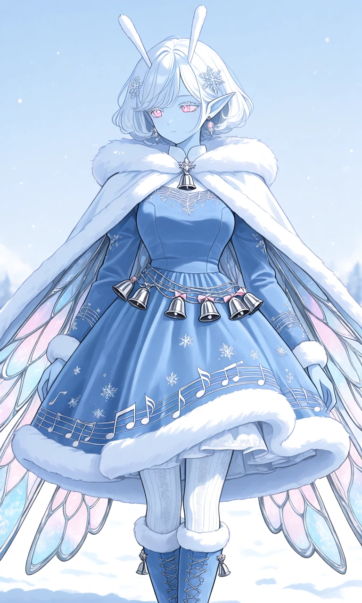
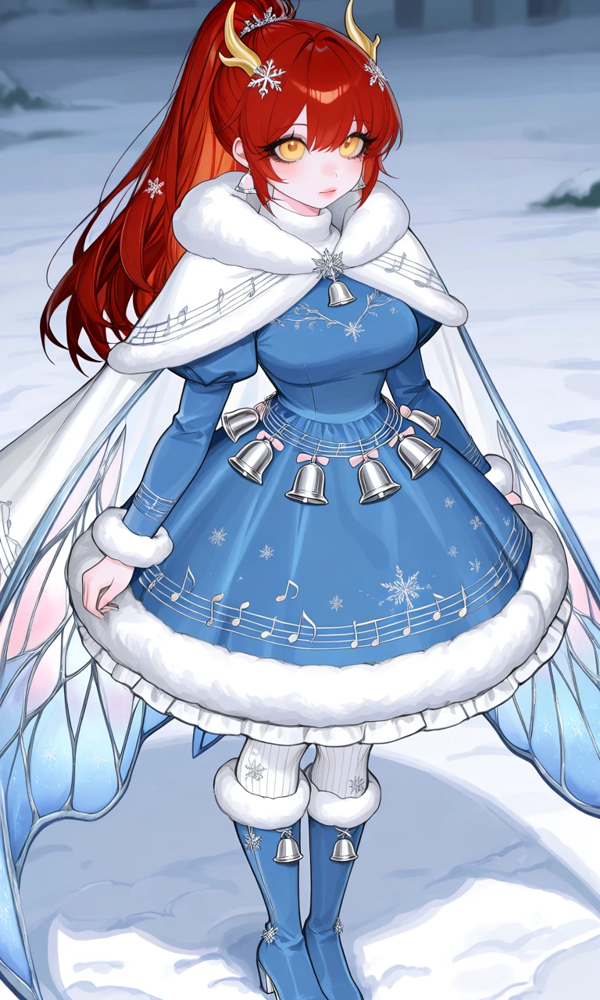

Snowbell Waltz

Outfit Prompt
An adorable, luxurious winter-inspired musical dress designed around the delicate beauty of silver bells, snowflakes, and musical notes.
The dress has a fitted, soft powder-blue velvet bodice with a high, rounded white faux-fur collar and delicate silver embroidery. Tiny silver musical notes and snowflake patterns are embroidered across the bodice, arranged like a graceful winter melody. A small silver bell-shaped brooch with a pale-pink gemstone decorates the center of the collar.
Long sleeves are made of soft powder-blue velvet, slightly puffed at the shoulders and fitted at the wrists, with fluffy white faux-fur cuffs. Fine silver musical staff lines spiral delicately around the sleeves, dotted with tiny embroidered musical notes.
The dress has a high, defined waist and a full, rounded, above-the-knee bell-shaped skirt, supported by soft layered petticoats. The skirt is made of thick, warm powder-blue velvet with delicate silver musical notes, tiny white snowflakes, and shimmering frost-like embroidery scattered across the fabric. A wide band of fluffy white faux fur trims the skirt hem, emphasizing its cute bell-shaped silhouette.
Around the waist is a beautiful decorative silver bell belt made of fine interwoven chains resembling musical staff lines. Several small, polished silver jingle bells hang from the belt at staggered lengths like notes in a melody. Each bell has a tiny snowflake engraving and a delicate pale-pink ribbon tied above it. The bells are elegant, miniature, and evenly spaced, creating a charming musical accessory without overwhelming the outfit.
Thick white knitted tights feature subtle silver snowflake patterns, paired with elegant knee-high winter boots made of soft powder-blue suede. The boots have fluffy white faux-fur trim around their tops, delicate silver lacing, small silver bell charms near the ankles, and low practical heels suitable for walking through snow.
Over the shoulders is a beautiful winter cape made of thick white velvet with a soft powder-blue exterior gradient and luxurious fluffy white faux-fur trim around the hood and edges. The cape is fastened at the neck with a silver snowflake clasp.
The inner lining of the cape features an intricate, symmetrical fairy-wing pattern in shimmering silver, icy blue, and pale pink. The decorative wing pattern is woven directly into the lining fabric, creating an elegant hidden detail that becomes visible when the cape is opened.
Accessories include small silver snowflake hairpins, and delicate dangling silver bell-shaped earrings.
The complete ensemble is cozy, feminine, adorable, and elegant, combining the soft warmth of luxurious winter clothing with the delicate musical beauty of silver bells. The powder-blue velvet, fluffy white faux fur, shimmering silver embroidery, and pale-pink accents create a charming winter-inspired design.
Outfit Examples



